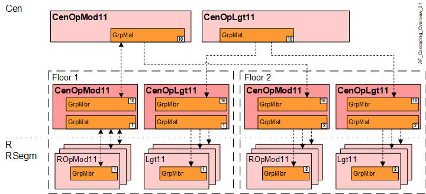

Hierarchical grouping
All central AFs can be grouped hierarchically.
Exception: Supply AFs where information is bundled using AFs.
Hierarchical grouping function: A superordinate AF (group manager) distributes information to and collects information from same-type subordinate AFs (group member). The central AFs contain all BACnet objects required to be used as manager or member.
Hierarchical grouping is used for different reasons:
- Network too long (see IT details for permissible distances).
- Too many network members:
For central functions, the max number is 500, and 250 for supply functions. - Simplified engineering and commissioning:
It often makes sense to completely engineer a floor, test it and then copy it.
A "floor" can comprise multiple small physical floors or several tenant rooms in a building.

Key
Cen | Central function |
CenOpMod11 | Central operating mode determination 11 |
CenOpLgt11 | Central operation lighting 11 |
R | Room |
RSegm | Room segment |
ROpMod11 | Room operating mode determination 11, with comfort button |
Lgt11 | Lighting 11 |
- - - - - | BACnet group data exchange |